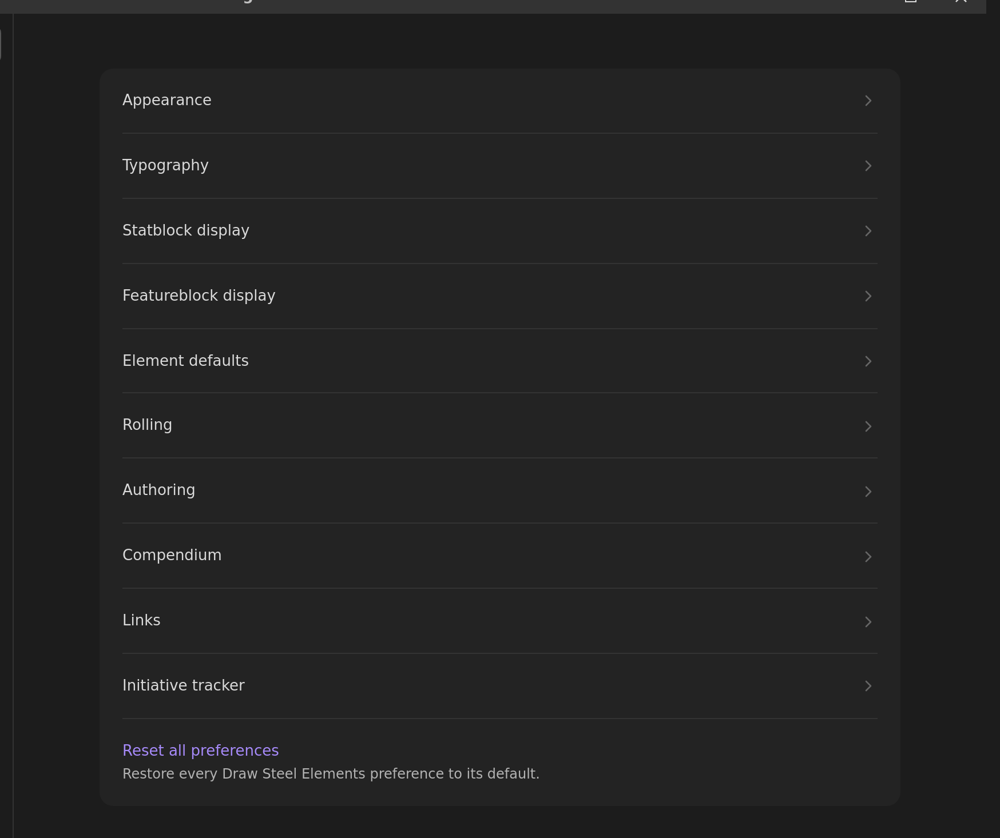
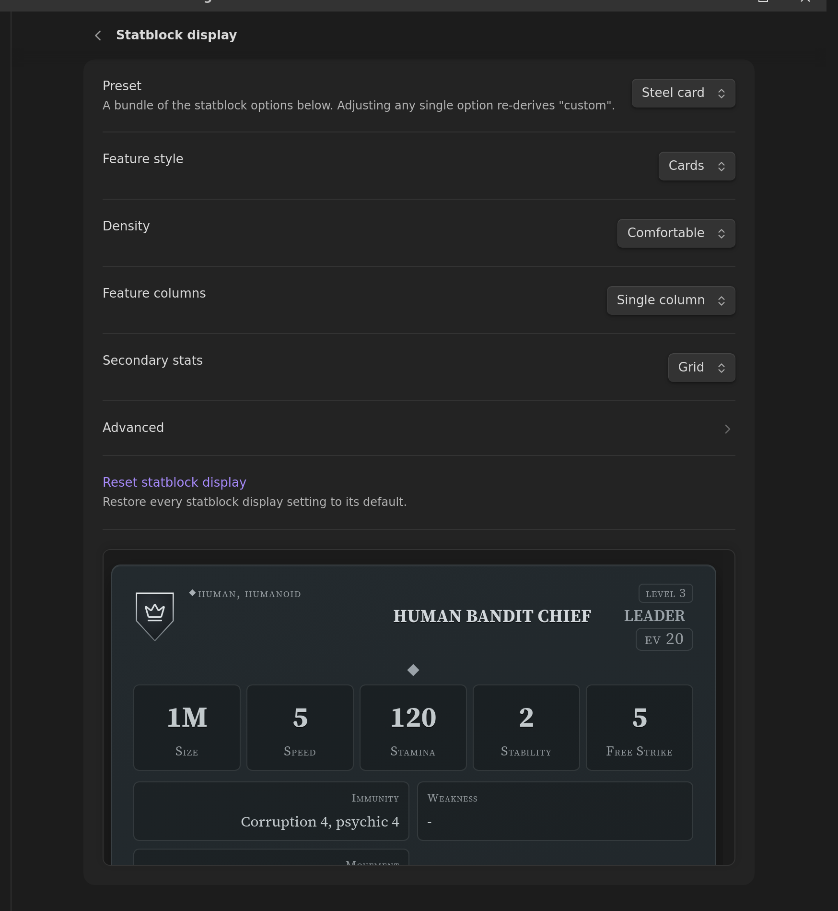

Settings¶
Open Settings → Draw Steel Elements. The plugin's settings are a short index of pages; click a page to see only its own settings.
You can also just search: Obsidian's own settings search (the box at the top of the settings window) indexes every Draw Steel Elements setting, so typing "font", "density" or "malice" finds the right row from anywhere and jumps straight to it.
Five pages — Appearance, Typography, Statblock display, Featureblock display and Feature display — end with a live preview: a labelled sample that re-renders as you change the settings above it, so you can see what an option does before you leave the page. It shows the whole sample rather than a cropped window onto one, and it never scrolls on its own — the settings pane is the only thing that scrolls. Each page also has a Reset action that puts that page's settings back to their defaults.
(One setting the preview can't show you is Sticky mini-header, because it is a behaviour of a scrolling reading pane and a settings window isn't one. Everything else on these pages moves the sample.)
Every setting ships on the value that reproduces what the plugin renders out of the box. Nothing changes unless you change it.

Choosing a statblock look, with pictures: Style your statblocks.
Appearance¶
- Reduce motion — turn off transitions and animations inside Draw Steel elements. Your system's own reduced-motion preference is always honoured regardless of this setting.
- Print preview — show every element in its print/export layout on screen, so you can check a handout without printing it.
- Initiative portraits — show creature portraits in the initiative tracker.
Typography¶
- Title font, Body font, Controls font — pick from a curated list, or type any font installed on your machine. "Default (Obsidian vault fonts)" keeps your vault's own text font.
- Text size (60%–140%) and Card size (80%–120%) — scale the text inside elements, or whole statblock and ability cards. Print and export always use 100%.
- Small text size, Large text size, Control text size (all 80%–120%) — these
three do something different from Text size above: instead of scaling an element as
a whole, they change how far each kind of text sits from the body text.
- Small text size covers everything quieter than the body: labels, captions, hints, chips, log lines, tallies. Turn it up if the small print in the trackers is hard to read.
- Large text size covers everything louder: card names, band titles, and the big display numbers on a statblock.
- Control text size covers buttons, steppers, tabs and collapse headers. Turn it down if the buttons shout louder than the content.
100% on all three is the shipped look. The live preview reacts as you drag, so you can see the effect on a real statblock before you commit. - Under Advanced: Card body font, Label font and Monospace font for the smaller text slots.
Font and size settings apply everywhere, including print and export, and are global — they can't be overridden per block. (The two exceptions are Text size and Card size, which are screen-only so a printout always fits the page, and Control text size, since buttons don't print at all.)
Sizes are always stated relative to your own theme's text size rather than in fixed pixels, so a Draw Steel element inherits your reading font size automatically — if you change your Obsidian text size, everything here follows without you touching a slider.
Statblock display¶
How statblocks are laid out. Start with the Preset:
- Steel card — the plugin's own look, and the default.
- Sourcebook — the book-style flat layout.
- Index card — compact, for reference at the table.

A preset writes nine settings: the seven below it, plus the two on the Feature display page (they're bundled by the website's presets too). Change any one of them afterwards and the preset box reads Custom — nothing is lost, it's just no longer one of the three named bundles.
The individual settings:
- Feature style — abilities and traits as Cards or as a Flat list.
- Density — Comfortable or Compact spacing.
- Feature columns — Single column or Side-by-side (wide).
- Secondary stats — the Immunity / Weakness / Movement / With Captain block as a Grid, a Grid (centered), or a hairline Ledger.
- Sticky mini-header — once a statblock's own header has scrolled out of view, pin a compact bar with its name, role and key stats to the top of the pane. On by default. Screen only: print, PDF export and canvas cards never show it.
- ↳ Sticky mini-header: include secondary stats — add a second line to that pinned bar with Movement, With Captain, Immunity and Weakness. On by default; greyed out while the mini-header is off. In a narrow pane (a sidebar leaf) the second line is dropped whatever this says — there is no room for it. (It repeats "sticky mini-header" in its name on purpose: it is the row directly above it that this belongs to, and a settings-search hit arrives with no neighbours to say so. Don't confuse it with Secondary stats above, which lays out the block on the card itself.)
The two sticky settings are not part of a preset — picking a look never turns a scroll behaviour on or off, and changing them never re-derives the preset to Custom.
Two things the mini-header deliberately does not do:
- A statblock inside a callout gets no pinned bar. A callout's body is its own scroll box that never actually scrolls, so there is no "scrolled past the header" moment for the bar to appear at. The card itself is unaffected.
- At the very end of a statblock the bar briefly covers a strip of the text below it. The bar is anchored to its own card, so in the last stretch of that card's travel it slides down over whatever follows before disappearing with it. Keep scrolling and it clears.
Under Advanced:
- Characteristics — the familiar One line ("Might +2"), or the value stacked over the word.
- Boxed first letter — a small framed M / A / R / I / P beside each characteristic, with or without the spelled-out word.
- Villain actions — listed among the other features, or collected into one collapsible Villain Actions band below them (always open in print and export).
Featureblock display¶
The same idea for featureblocks; the preview on this page shows a featureblock rather than a statblock.
- Feature style — cards or a flat list.
- Stat line — the Stamina / Size / EV header as paired cells or as full-width rows with the value right-aligned.
Feature display¶
How an ability card itself is laid out — the card the Feature element renders on its own, and the same card wherever it appears inside a statblock or a featureblock. The preview on this page is a standalone ability card.
- Keyword display — the keyword and action-type band as Chips (the default), Inline text, a Grid, or a Ledger.
- Distance + target — the same treatments for the Distance / Target rail.
Both are part of the statblock Preset, so picking a preset on the Statblock display page writes them, and changing either one here re-derives that preset to Custom. (They lived on that page until recently, filed under its Advanced list — they were always ability-card settings, so this is where they belong.)
Element defaults¶
- Collapsible by default — blocks can be collapsed unless the block itself sets
collapsible:. See common element fields. - Start collapsed — collapsible blocks start closed unless the block sets
collapse_default:. - Under Advanced: Edit Recoveries with a popover — clicking a Recovery marker opens a small − / + popover instead of setting the count immediately. See Stamina Bar.
Rolling¶
- Enable rolling (off by default) — adds a dice roller to rendered ability cards. The standalone Roll element always rolls, whatever this says.
- Roller — roll natively, or hand the raw dice to the community Dice Roller plugin when it's installed. Draw Steel's tier/edge/bane maths always stays native, and the plugin falls back to its own roller automatically if Dice Roller is missing or fails.
- Click ability to roll — with rolling enabled, clicking a power-roll tier row on an ability card rolls it.
Authoring¶
- Show edit button on rendered blocks (off by default) — adds a pencil to each rendered block, in its element menu, that opens a form editor. See Writing and editing blocks.
Compendium¶
Destination folder, release and locale for Compendium Sync, plus the Sync and Check for updates buttons and a line showing which release you have, how many files it installed, and when.
Links¶
- Fall back to steelcompendium.io links — when an
scc.v1:link doesn't resolve to a file in your vault, link to its page on steelcompendium.io instead. Nothing is fetched; you just get a working link when you click it.
Initiative tracker¶
- Default creature image path — the image used for creatures in the initiative tracker that don't specify their own.
Overriding a setting for one block¶
Appearance settings are global, but a single block can pin its own layout with a reserved
prefs: key — see
per-block appearance overrides.